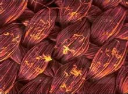
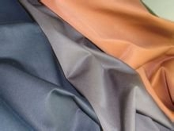
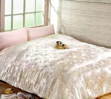
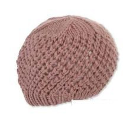
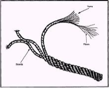

纤维
纤维（美：Fiber；英：Fibre）是指由连续或不连续的细丝组成的物质。在动植物体内，纤维在维系组织方面起到重要作用。纤维用途广泛，可织成细线、线头和麻绳，造纸或织毡时还可以织成纤维层；同时也常用来制造其他物料，及与其他物料共同组成复合材料。
相关分类
折叠一、天然纤维
天然纤维是自然界存在的，可以直接取得纤维，根据其来源分成植物纤维、动物纤维和矿物纤维三类。
(一)植物纤维
植物纤维是由植物的种籽、果实、茎、叶等处得到的纤维，是天然纤维素纤维。从植物韧皮得到的纤维如亚麻、黄麻、罗布麻等；从植物叶上得到的纤维如剑麻、蕉麻等。植物纤维的主要化学成分是纤维素，故也称纤维素纤维。
植物纤维包括：种子纤维、韧皮纤维、叶纤维、果实纤维。
种子纤维：是指一些植物种子表皮细胞生长成的单细胞纤维。如棉、木棉。
韧皮纤维：是从一些植物韧皮部取得的单纤维或工艺纤维。如：亚麻、苎麻、黄麻、竹纤维。
叶纤维：是从一些植物的叶子或叶鞘取得的工艺纤维。如：剑麻、蕉麻。
果实纤维：是从一些植物的果实取得的纤维。如：椰子纤维。
(二)动物纤维
动物纤维是由动物的毛或昆虫的腺分泌物中得到的纤维。从动物毛发得到的纤维有羊毛、兔毛、骆驼毛、山羊毛、牦牛绒等；从动物腺分泌物得到的纤维有蚕丝等。动物纤维的主要化学成分是蛋白质，故也称蛋白质纤维。
动物纤维 (天然蛋白质纤维) 包括：毛发纤维和腺体纤维。
毛发纤维：动物毛囊生长具有多细胞结构由角蛋白组成的纤维。 如：绵羊毛、山羊绒、骆驼毛、兔毛、马海毛。
丝纤维: 由一些昆虫丝腺所分泌的，特别是由鳞翅目幼虫所分泌的物质形成的纤维，此外还有由一些软体动物的分泌物形成的纤维。如：蚕丝。
(三)矿物纤维
矿物纤维是从纤维状结构的矿物岩石中获得的纤维，主要组成物质为各种氧化物，如二氧化硅、氧化铝、氧化镁等，其主要来源为各类石棉，如温石棉，青石棉等。
折叠二、化学纤维
化学纤维是经过化学处理加工而制成的纤维。可分为人造纤维（再生纤维），合成纤维和无机纤维。
(一)人造纤维（再生纤维）
人造纤维也称再生纤维。
人造纤维是用含有天然纤维或蛋白纤维的物质，如木材、甘蔗、芦苇、大豆蛋白质纤维等及其他失去纺织加工价值的纤维原料，经过化学加工后制成的纺织纤维。主要用于纺织的人造纤维有：黏胶纤维、醋酸纤维、铜氨纤维。
再生纤维是指将天然高聚物制成的浆液高度纯净化后制成的纤维，如再生纤维素纤维、再生蛋白质纤维、再生淀粉纤维以及再生合成纤维。
(二)合成纤维
合成纤维的化学组成和天然纤维完全不同，是从一些本身并不含有纤维素或蛋白质的物质如石油、煤、天然气、石灰石或农副产品，先合成单位，再用化学合成与机械加工的方法制成纤维。如聚酯纤维（涤纶）、聚酰胺纤维（锦纶或尼龙）、聚乙烯醇纤维（维纶）、聚丙烯腈纤维（腈纶）、聚丙烯纤维（丙纶）、聚氯乙烯纤维（氯纶）等。
(三)无机纤维
无机纤维是以天然无机物或含碳高聚物纤维为原料，经人工抽丝或直接碳化制成。包括玻璃纤维，金属纤维和碳纤维。
折叠三、其他分类
度与细度有棉型（38 ~ 51mm）、毛型（64 ~ 114mm）、丝型（长丝）、中长型（51 ~ 76mm）、超细型（<0.9dtex）之分。
面形态有普通圆形、中空和异形纤维以及环状或皮芯纤维。
曲有高卷曲、低卷曲、异卷曲、无卷曲之分。
化纤维；高性能纤维；功能或智能纤维。
工方式对天然纤维有不同初加工和改性的纤维。
纤维有高速纺丝、牵伸丝（DTY）、预或全取向丝（POY或FOY）、变形丝等。
相关应用
折叠纤维在纺织业
纤维是天然或人工合成的细丝状物质．在现代生活中，纤维的应用无处不在，而且其中蕴含的高科技还不少呢。导弹需要防高温，江堤需要防垮塌，水泥需要防开裂，血管和神经需要修补，这些都离不开纤维这个小身材的“神奇小子”。
穿得舒服， 御寒防晒，是我们对衣服的最初要求，如今这个要求已很容易达到。海藻碳纤维做成衣服后，穿着时能长期使人体分子摩擦产生热反应，促进身体血液循环，因此能蓄热保温，而防紫外线辐射的纤维制成衣服便可减少我们夏日撑伞的麻烦。
不过现在人们不仅要求穿得暖和，还增加了许多新要求，纤维都能一一满足：过去的年代曾经流行过 “涤盖棉”、“丙盖棉”，面料外涤里棉，是因为棉和肌肤的亲和性好，而涤与丙纶结实耐磨，方便洗涤。现在的新材料有了颠覆性的转变，可以“棉盖涤”、“棉盖丙”，新型的抗菌导湿纤维，比通常的纤维直径?穴10μm一100μm?雪要小，织成的面料可以使汗液透过，却不附着，这样汗液便被排到外层的棉布层，衣服贴身面便可随时保持干爽……千变万化，只为了帮我们穿着更舒适。
折叠纤维在军事
而纤维更大的作用早已不仅停留在日常穿着了，粘胶基碳纤维帮导弹穿上“防热衣”，可以耐几万度的高温；无机陶瓷纤维耐氧化性好，且化学稳定性高，还有耐腐蚀性和电绝缘性，航空航天、军工领域都用得着；聚酰亚胺纤维可以做高温防火保护服、赛车防燃服、装甲部队的防护服和飞行服；碳纳米管可用作电磁波吸收材料，用于制作隐形材料、电磁屏蔽材料、电磁波辐射污染防护材料和“暗室”（吸波）材料。
折叠纤维在环保
聚乳酸作为可完全生物降解性塑料，越来越受到人们重视。可将聚乳酸制成农用薄膜、纸代用品、纸张塑膜、包装薄膜、食品容器、生活垃圾袋、农药化肥缓释材料、化妆品的添加成分等。
折叠纤维在医药
方面的应用已非常广泛。甲壳素纤维做成医用纺织品，具有抑菌除臭、消炎止痒、保湿防燥、护理肌肤等功能，因此可以制成各种止血棉、绷带和纱布，废弃后还会自然降解，不污染环境；聚丙烯酰胺类水凝胶可能控制药物释放；聚乳酸或者脱乙酰甲壳素纤维制成的外科缝合线，在伤口愈合后自动降解并吸收，病人就不用再动手术拆线了。
折叠纤维在建筑领域
防渗防裂纤维可以增强混凝土的强度和防渗性能，纤维技术与混凝土技术相结合，可研制出能改善混凝土性能，提高土建工程质量的钢纤维以及合成纤维，前者对于大坝、机场、高速公路等工程可起到防裂、抗渗、抗冲击和抗折性能，后者可以起到预防混凝土早期开裂，在混凝土材料制造初期起到表面保护。在公路、水电、桥梁、国家大剧院、上海市公安局指挥中心屋顶停机坪、上海虹口足球场等大型工程中已露了一手。
折叠纤维在生物科技
随着生物科技的发展，一些纤维的特性可以派上用场。类似肌肉的纤维可制成“人工肌肉”、“人体器官”。聚丙烯酰胺具有生物相容性，一直是人体组织良好的替代材料，聚丙烯酰胺水凝胶能够有规律地收缩和溶胀，这些特性正可以模拟人体肌肉的运动。
胶原是人体中最多的蛋白质，人体心脏、眼球、血管、皮肤、软骨及骨路中都有它的存在，并为这些人体组织提供强度支撑。合成纳米纤维能在骨折处形成一种类似胶质的凝胶，引导骨骼矿质在胶原纤维周围生成一个类似于天然骨骼的结构排列，修补骨骼于无形之中。
蜘蛛丝一直是人类想要模仿制造的，天然蜘蛛丝的直径为4微米左右，而它的牵引强度相当于钢的5倍，还具有卓越的防水和伸缩功能。如果制造出一种具有天然蜘蛛丝特点的人造蜘蛛丝，将会具有广泛的用途。它不仅可以成为降落伞和汽车安全带的理想材料，而且可以用作易于被人体吸收的外科手术缝合线。
折叠纤维在塑料
纤维的充填能有效地提高塑料的强度和刚度。纤维增强塑料属刚性结构材料。
纤维增强塑料主要有两个组分。基体是热固性塑料或热塑性塑料，用纤维材料充填。通常基体的强度较低，而纤维填料具有较高的刚性但呈脆性。两者复合得到的增强塑料中，纤维承受很大的载荷应力，基体树脂通过与纤维界面上的剪切应力，支撑了纤维传递了外载荷。
热固性塑料纤维增强塑料略写成FRP（fiber reinforced plastics）,热塑性纤维增强塑料略写成FRTP（fiber reinforced thermoplastics）.若用玻璃纤维增强则前缀G，如GFRP、GFRTP；如用碳纤维增强前缀C；用硼纤维则前缀B；用芳纶聚酰胺纤维（Kevlar）增强则前缀K。
增强塑料以玻璃纤维使用占优势，其品种很多，无碱玻璃（E-glass）为常用普通纤维，碱金属氧化物含量很低，具有优良的化学稳定性和电绝缘性。高强度玻璃纤维（S-glass）含有镁铝硅酸盐等成分，具有比E-glass纤维高10%-50%的强度。由于化学成分和生产工艺的不同，还有高模量、中碱和高碱等各种玻璃纤维。碳纤维具有较大的刚性和优良的耐腐性，常用于增强热固性塑料。硼纤维本身是钨丝和硼的复合材料，具有较高的弹性模量，但纤维较粗且制造成本高。常用环氧树脂作基体。低密度的芳纶纤维国内已经躬行并使用，它用于承受拉应力的缆绳和承力构件。
表面处理是在纤维表面涂覆表面处理剂，表面处理剂包括浸润剂及一系列偶联剂和助剂。偶联剂能在纤维与基体树脂间形成一个良好黏合界面，从而有效提高两者的黏结强度，也提高了增强塑料的防水、绝缘和耐磨等性能。
{kind=link}
{kind=link}
{kind=link}
{kind=link}
{kind=link}
{kind=link}